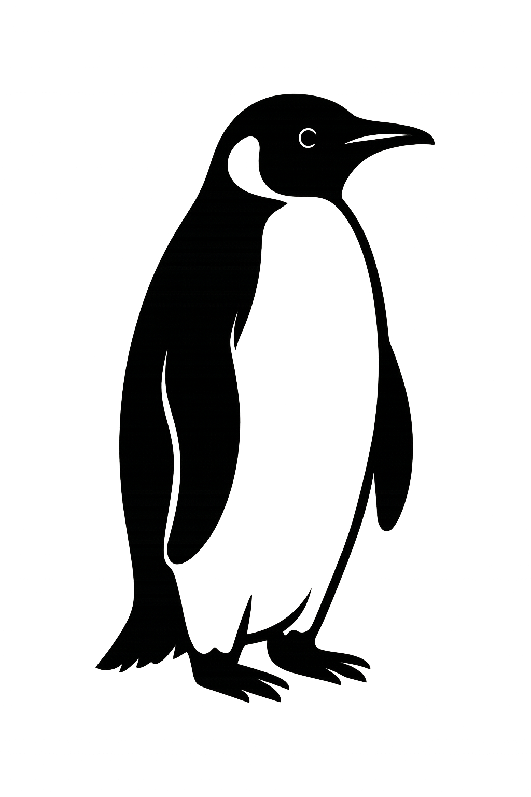

 |
“This is water”, David Foster Wallace repeated in his famous commencement speech, urging students to stay conscious and alive in the routines of everyday life. For me, the act of writing about the things I'm interested in—not just code but the ideas and patterns that shape how I see the world—serves as a way to pay closer attention. This blog is my attempt to step out of the “default setting,” to be aware of the environment I'm swimming in, and to keep track of the thoughts that move me forward.
Understanding Attention Mechanisms
| Email: | marsmxm@gmail.com | ||||
| Github: | https://github.com/marsmxm |